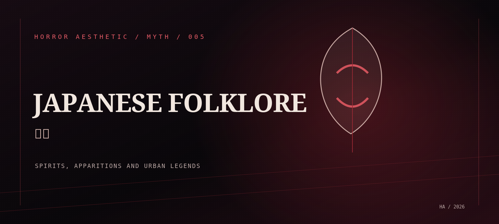

The collection / Index
The Dark Archive
Собрание направлений, тем и материалов HORROR AESTHETIC. Исследуйте архив по жанрам, медиумам и культурным контекстам.

Cinema / Japan
J-Horror
Кинематограф призраков, проклятий и невидимого ужаса.
Открыть раздел ↗
Reviews / Cinema
Film Reviews
Авторские заметки о классике, культе и новом экстремальном кино.
Открыть раздел ↗
Books / Manga
Library of Horror
Литература, манга, рассказы и авторы тёмного воображения.
Открыть раздел ↗
Myth / Folklore
Folklore & Hauntings
Городские легенды, духи, демоны и народные страхи.
Открыть раздел ↗
People / Cinema
Directors
Режиссёры, сформировавшие визуальный язык ужаса.
Открыть раздел ↗
Visual culture
Visual Archive
Обложки, постеры и визуальные исследования жанра.
Открыть раздел ↗